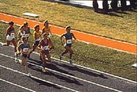

|
Food contains the nutrients necessary to build body tissue and keep it healthy. The main groups of food constituents are water, carbohydrates, proteins, fats, minerals and vitamins. The body uses each of these nutrients differently and at different rates. Carbohydrates and fats supply energy. The growth and repair of the body is one of protein's main functions. Essential amino acids from protein make it possible for the body to replace old cells and to repair injuries. Protein also supplies the body's main building blocks,fuelling our growth from infancy to adulthood. Protein, fat and carbohydrates are aided in their work by a complex array of vitamins, minerals and enzymes, which help regulate important body processes such as digestion. The B vitamins, for instance, help the body obtain energy from protein and carbohydrates. Minerals like calcium and phosphorus are important for good bones and teeth. The utilization of all nutrients by the body is a complex process, each substance acting with other substances to achieve overall good health.  Food and Energy Food is an essential source of energy. But as a fuel, all food is not created equally. Protein supplies about two-thirds of the energy we need to live. Carbohydrates are also a vital source of energy as is fat. A tug-of-war is a spontaneous and energy-demanding activity, requiring the body to burn fuel suddenly, at higher rates than when we are simply sitting or standing. Sudden bursts of energy are fuelled by carbohydrates, which are stored in the muscles in the form of glycogen. Athletes generally have a greater concentration of glycogen, due to rigorous training and special diets, than does the average person. At rest, your body may need 20% fewer calories per day than when you are doing hard physical work or exercising strenuously. Calorie requirements vary greatly from individual to individual, depending on factors like age, weight and gender. Athletes in training have special dietary requirements. Their trainers and nutritional advisors often have athletes on strict eating regimes, where they consume extra carbohydrates and proteins, to help build their muscles and prepare them for the extraordinary rigours of competition. Over fifty nutrients have been identified as essential to the body. Athletes do not necessarily require a great number of these specific nutrients than a less active person does, but may need more carbohydrates for the extra energy they use, and they may need to regulate their fluid intake, to avoid dehydration. For years, our teachers and parents have been telling us that the best way to achieve a long and healthy life is to eat "right", avoid excessive mental stress and exercise. Our eating habits affect the way we feel and how we perform certain activities. Modern dietary recommendations focus on ensuring an adequate intake of nutrients such as carbohydrates and fiber, while moderating others such as dietary fat which may be linked to the development of chronic disease. Regular exercise such as walking, swimming, cycling and so on reduces stress and helps get rid of those extra calories that our modern fast food lifetstyle seems to encourage. |